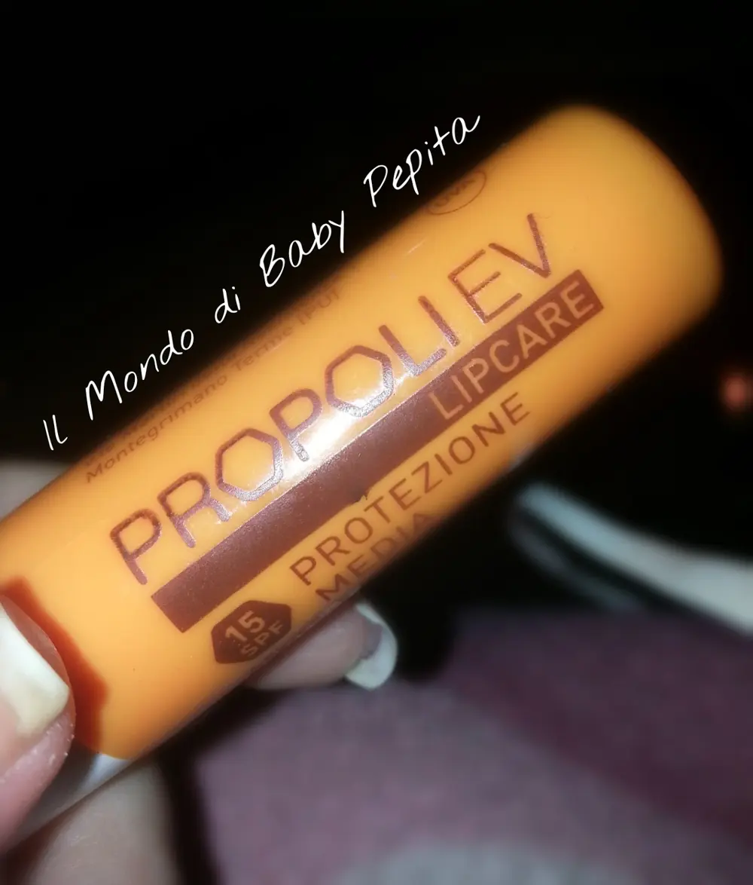
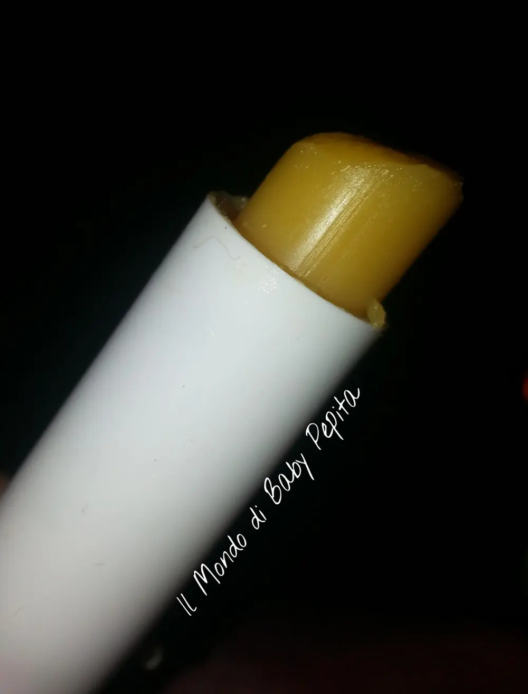
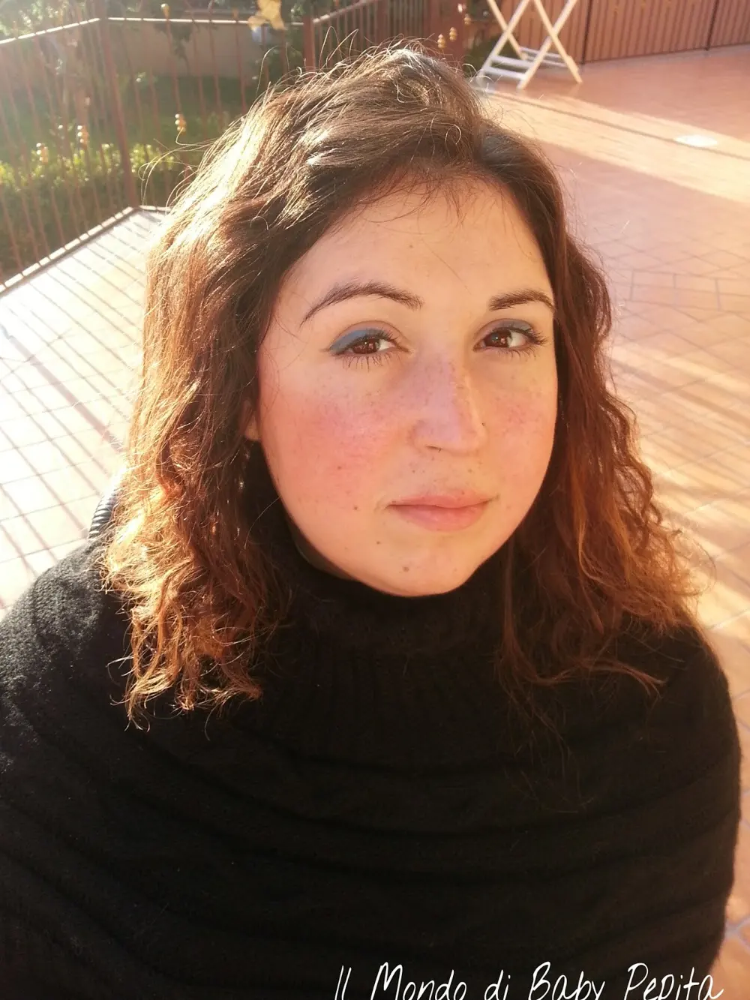
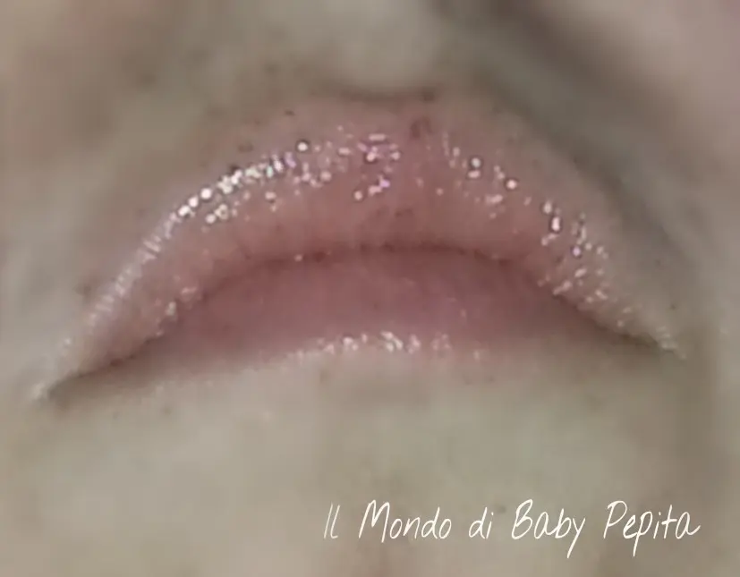

ERBA VITA PROPOLI EV LIPCARE - STICK LABBRA
Salve tesori. .In questo gennaio per rinchiusa in casa dall'influenza, infatti non ho nemmeno il coraggio di provare, testare e quant'altro presa da tosse e raffreddore. Il mio unico alleato, tra medicine ed infusi è il burro cacao :D
Infatti oggi vi parlo di lui. .Del mio amico stick labbra. .
Ovviamente ragazze non è una scelta fatta a caso ma precisa. .Sì, perché negli anni ho provato più e più emollienti labbra e anche quando avevo labbra da far schifo (tutte screpolate che mi bruciavano) ho trovato sollievo e morbidezza in un solo burro cacao all'estratto di PROPOLI. .Lo prendo in erboristeria. .
Che tra l'altro vabbè, dovrei parlarvi del mio rapporto con la Propoli. .Un toccasana per moltissime cose. .Poi ve ne parlerò accuratamente.
Il burro cacao in questione è lui

ERBA VITA PROPOLI EV LIPCARE - STICK LABBRAStick labbra a base di Propoli, Aloe vera - Tea tree oil
Quindi estratti naturali senza parabeni e quindi tutti quei conservanti che usano per mantenere il prodotto.

È un stick labbra con protezione 15 della casa Erba Vita.
Emolliente protettivo per donare alle labbra una protezione naturale. Protegge da agenti esterni, sbalzi di temperatura e batteri. .Utile in caso di taglietti o labbra screpolate.
Un consiglio che vi dò però, non tenerlo in tasca o in luoghi umidi perchéè molto cremoso e infatti già all'applicazione risulta sciogliersi dal tubetto ma invece è proprio così . .è cremosissimo. .
Io lo uso a volte anche come lucidalabbra quando non voglio colorare le labbra essendo lucido e cremoso. .

Il risultato è così :

CONTENUTO NETTO: 5,5ml
STATO DI CONSERVAZIONE: conservare in luogo fresco e asciutto.
PREZZO: € 4,70